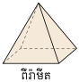
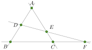
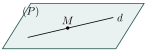
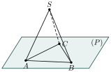
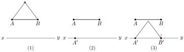
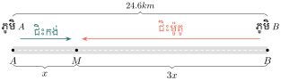
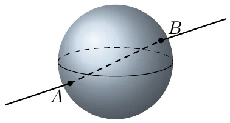
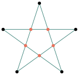

វត្ថុបំណង
- បង្ហាញសញ្ញាណនៃចំណុច បន្ទាត់ កន្លះបន្ទាត់ អង្កត់ និងប្លង់
- ប្រៀបធៀបអង្កត់
- ធ្វើប្រមាណវិធីបូកនិងដកលើអង្កត់
- ធ្វើប្រមាណវិធីគុណនិងចែកអង្កត់នឹងមួយចំនួន ។
1. សញ្ញាណរូបធរណីមាត្រ
1.1. សញ្ញាណទូទៅនៃរូបធរណីមាត្រ
ឧទាហរណ៍ ៖ ការសិក្សាអំពីរូបរាង ទំហំ វិមាត្រ ទីតាំង និងលក្ខណៈនៃវត្ថុ ជាការចាំបាច់នៅក្នុងជីវភាពរស់នៅប្រចាំថ្ងៃ ។


1.2. ចំណុច
ឧទាហរណ៍ 1 ៖ បើគេយកចុងខ្មៅដៃស្រួចទៅចុចលើក្រដាសនោះ គេបានស្នាមមួយ ។ រូបផ្កាយនៅលើមេឃ ខ្សាច់មួយគ្រាប់ \(\displaystyle \dots\) រូបភាពទាំងអស់នេះហៅថា ចំណុច ។
ឧទាហរណ៍ 2 ៖ គេតាងចំណុចដោយ


គេហៅថា ចំណុច \(\displaystyle A\) ចំណុច \(\displaystyle B\) ចំណុច \(\displaystyle H\) និងចំណុច \(\displaystyle C\) ។
- ចំណុចគ្មានវិមាត្រ គ្មានទទឹង គ្មានបណ្តោយ និងគ្មានកម្ពស់ទេ ។
- ចំណុចជាធាតុតូចបំផុត គេហៅថា ភាវៈធរណីមាត្រងាយជាងគេ ។
លោកគ្រូបានឱ្យសិស្សយកដើមផ្កាចំនួន \(\displaystyle 6\) ដើមទៅដាំឱ្យបាន \(\displaystyle 4\) ជួរ ដែលក្នុងមួយជួរៗមាន \(\displaystyle 3\) ដើម ។ តើត្រូវដាំរបៀបណា? ដៅចំណុចដែលត្រូវដាំ?
គូសបន្ទាត់ \(\displaystyle 4\) ឱ្យកាត់គ្នាជាបីជ្រុងនិងបន្ទាត់ពីរបន្ថែម ដូចរូប ហើយដាំដើមផ្កានៅត្រង់ចំណុចប្រសព្វទាំង \(\displaystyle 6\) ។ ចំណុចនីមួយៗស្ថិតនៅលើបន្ទាត់ពីរ ដូច្នេះបន្ទាត់ \(\displaystyle 4\) ជួរៗនីមួយៗមានចំណុច \(\displaystyle 3\) ។

ឱ្យឧទាហរណ៍រូបភាពចំណុចងាយៗដែលមាននៅជុំវិញខ្លួន ។
មើលចម្លើយ
ចុងម្ជុល ចុងខ្មៅដៃស្រួច ស្នាមចុចនៃប៊ិច ផ្កាយនៅលើមេឃ ខ្សាច់មួយគ្រាប់ ។
1.3. បន្ទាត់
ឧទាហរណ៍ 1 ៖ បើគេរំកិលចុងខ្មៅដៃនៅលើក្រដាស គេបានរូបភាពមួយហៅថា បន្ទាត់ \(\displaystyle d\) ។

ឧទាហរណ៍ 2 ៖ បើគេយកម្ជុលពីរដើមមកដោតរៀងគ្នាត្រង់ \(\displaystyle A\) និង \(\displaystyle B\) ។ រួចគេយកខ្សែអំបោះពីរសរសៃដែលមានពណ៌ខុសគ្នាមកចងសន្ធឹងត្រង់ \(\displaystyle A\) និង \(\displaystyle B\) ។ គេសង្កេតឃើញថា ខ្សែអំបោះនៅត្រង់ចន្លោះចំណុច \(\displaystyle A\) និង \(\displaystyle B\) ត្រួតស៊ីគ្នា ។
បន្ទាត់គ្មានកម្ពស់ គ្មានទទឹង តែគេអាចនិយាយពីបណ្តោយវាបាន ។ បន្ទាត់ជាភាវៈធរណីមាត្រដែលមានវិមាត្រមួយ ។
តាមឧទាហរណ៍ខាងលើ គេសង្កេតឃើញថាតាមពីរចំណុចផ្សេងគ្នា \(\displaystyle A\) និង \(\displaystyle B\) គេអាចគូសបានបន្ទាត់តែមួយគត់ ។ គេកំណត់សរសេរបន្ទាត់ \(\displaystyle AB\) ។ គេអាចបន្លាយ \(\displaystyle AB\) បានទាំងសងខាងព្រោះបន្ទាត់គ្មានព្រំដែន ។
ស្វ័យសត្យ
- តាមចំណុចមួយ គេអាចគូសបានបន្ទាត់ច្រើនរាប់មិនអស់ ។
- តាមចំណុចពីរផ្សេងគ្នា គេអាចគូសបានបន្ទាត់តែមួយគត់ ឬច្រើនរាប់មិនអស់តែត្រួតស៊ីគ្នា ។
រូបខាងក្រោមតាងឱ្យបន្ទាត់ \(\displaystyle d\) និងចំណុច \(\displaystyle A, B, C, E, H\) ។ តើចំណុចណាខ្លះជារបស់បន្ទាត់ \(\displaystyle d\) និងមិនមែនជារបស់បន្ទាត់ \(\displaystyle d\) ?
ចំណុច \(\displaystyle A, B, C, E\) ស្ថិតនៅលើបន្ទាត់ \(\displaystyle d\) តែមួយ គេថា \(\displaystyle A, B, C, E\) រត់ត្រង់គ្នា គេសរសេរ
សញ្ញា \(\displaystyle \in\) អានថាជារបស់ ។
ចំណុច \(\displaystyle H\) មិនស្ថិតនៅលើបន្ទាត់ \(\displaystyle d\) ទេ គេសរសេរ
អានថា \(\displaystyle H\) មិនមែនជារបស់បន្ទាត់ \(\displaystyle d\) ។
ជំនួស \(\displaystyle \dots\) ខាងក្រោមដោយសញ្ញា \(\displaystyle \in, \notin\)
- ក. \(\displaystyle A \dots d\)
- ខ. \(\displaystyle F \dots d\)
- គ. \(\displaystyle D \dots d\)
- ឃ. \(\displaystyle B \dots d\)
- ង. \(\displaystyle E \dots d\)
- ច. \(\displaystyle C \dots d\) ។
មើលចម្លើយ
ចំណុច \(\displaystyle A, B, F, C\) ស្ថិតនៅលើបន្ទាត់ \(\displaystyle d\) ចំណែកចំណុច \(\displaystyle D\) និង \(\displaystyle E\) នៅក្រៅបន្ទាត់ \(\displaystyle d\) ៖
1.4. កន្លះបន្ទាត់
ឧទាហរណ៍ ៖ គេមានបន្ទាត់ \(\displaystyle xy\) មួយនិងចំណុច \(\displaystyle M\) មួយ ដែល \(\displaystyle M \in xy\) ។
នោះគេបាន គេថាចំណុច \(\displaystyle M\) ចែកបន្ទាត់ \(\displaystyle xy\) ជាពីរផ្នែកគឺ \(\displaystyle Mx\) និង \(\displaystyle My\) ។ ផ្នែកនីមួយៗហៅថា កន្លះបន្ទាត់ ។ គេសរសេរកន្លះបន្ទាត់ \(\displaystyle Mx\) និង \(\displaystyle My\) ។ ចំណុច \(\displaystyle M\) ហៅថា គល់ នៃកន្លះបន្ទាត់ ។
ដើម្បីកំណត់កន្លះបន្ទាត់មួយ គេត្រូវសរសេរ “គល់” មុន ។
- កន្លះបន្ទាត់ \(\displaystyle Mx\) និង \(\displaystyle My\) ដែលផ្តុំបានបន្ទាត់ \(\displaystyle xy\) គេហៅថា “កន្លះបន្ទាត់ឈមគ្នា” ។
- កន្លះបន្ទាត់មានព្រំដែនតែម្ខាងទេ ។
លំហាត់គំរូ 1 ៖ សរសេរកន្លះបន្ទាត់តាមរូបខាងក្រោម ៖
ចំណុច \(\displaystyle A\) ជាគល់ ចែកបន្ទាត់ជាកន្លះបន្ទាត់ \(\displaystyle Ax\) និង \(\displaystyle Ay\) ។ ចំណុច \(\displaystyle D\) ជាគល់ ចែកបន្ទាត់ជាកន្លះបន្ទាត់ \(\displaystyle Dx\) និង \(\displaystyle Dy\) ។
ដូចនេះ គេបានកន្លះបន្ទាត់ \(\displaystyle Ax,\ Ay,\ Dx\) និង \(\displaystyle Dy\) ។
លំហាត់គំរូ 2 ៖ គេមានបន្ទាត់ \(\displaystyle AB\) និង \(\displaystyle EF\) ប្រសព្វគ្នាត្រង់ចំណុច \(\displaystyle O\) ។ គូសរូប និងសរសេរឈ្មោះកន្លះបន្ទាត់ទាំងនោះ ។
ដំណោះស្រាយ ចំណុច \(\displaystyle O\) ជាគល់នៃកន្លះបន្ទាត់ទាំងបួន ។

ដូចនេះ កន្លះបន្ទាត់ទាំងនោះគឺ \(\displaystyle OA,\ OB,\ OE,\ OF\) ។
ពិនិត្យមើលរូប រួចឆ្លើយនឹងសំណួរខាងក្រោម ៖
តាមរូបខាងលើ តើមានកន្លះបន្ទាត់ប៉ុន្មាន? សរសេរឈ្មោះកន្លះបន្ទាត់ទាំងនោះ ។
មើលចម្លើយ
ចំណុចនីមួយៗ \(\displaystyle A, B, C, D\) ជាគល់ ហើយចែកបន្ទាត់ជាកន្លះបន្ទាត់ពីរ ៖
ដូចនេះ មាន \(\displaystyle 8\) គឺ \(\displaystyle Ax,\ Ay,\ Bx,\ By,\ Cx,\ Cy,\ Dx\) និង \(\displaystyle Dy\) ។
1.5. ប្លង់
ឧទាហរណ៍ 1 ៖ គេឃើញថាផ្ទៃរាបស្មើនៅជុំវិញខ្លួនយើង ដូចជា ផ្ទៃជញ្ជាំង ផ្ទៃពិដានផ្ទះ ផ្ទៃតុ ឬផ្ទៃក្រដាសមួយសន្លឹកជាសញ្ញាណនៃប្លង់ ។

បើបន្ទាត់ \(\displaystyle d\) នៅក្នុងប្លង់ \(\displaystyle P\) មានន័យថាគ្រប់ចំណុចទាំងអស់នៃបន្ទាត់ \(\displaystyle d\) ក៏ស្ថិតនៅក្នុងប្លង់ \(\displaystyle P\) ដែរ ។ បានសេចក្តីថា
ឧទាហរណ៍ 2 ៖ បើបន្ទាត់ \(\displaystyle xy\) ចែកប្លង់ \(\displaystyle P\) ជាពីរផ្នែកគឺ (I) និង (II) ដែល (I) និង (II) ហៅថាកន្លះប្លង់ នោះបន្ទាត់ \(\displaystyle xy\) ជាព្រំដែនរួមនៃកន្លះប្លង់ទាំងពីរ ។

លំហាត់គំរូ 1 ៖ រកឧទាហរណ៍នៅជុំវិញខ្លួនដែលឱ្យរូបភាពប្លង់ ។
ដំណោះស្រាយ ផ្ទៃទឹកនៅនឹងថ្កល់ ផ្ទៃក្តារខៀន ផ្ទៃកញ្ចក់ \(\displaystyle \dots\) ជារូបភាពប្លង់ ។
លំហាត់គំរូ 2 ៖ បើគេរំកិលផ្ទាំងគំនូរមួយលើតុ តើគេសង្កេតឃើញផ្ទៃទាំងពីរនោះយ៉ាងដូចម្តេច ? ចូរធ្វើការសន្និដ្ឋាន ។
ដំណោះស្រាយ គេឃើញវាត្រួតស៊ីគ្នាជានិច្ច ។
ដូច្នេះ ប្លង់អាចរំកិលលើខ្លួនឯង ។
គេមានបីចំណុច \(\displaystyle A, B, C\) រត់មិនត្រង់គ្នានៅលើប្លង់ \(\displaystyle P\) មួយ (ដូចរូបខាងស្តាំ) ។ ចំណុច \(\displaystyle S\) មួយនៅក្រៅប្លង់ \(\displaystyle P\) គេគូសបន្ទាត់ \(\displaystyle SA, SB\) និង \(\displaystyle SC\) ។

- ក. រាប់ប្លង់ថ្មីដែលទើបនឹងកើតមាន ។
- ខ. តើប្លង់ \(\displaystyle P\) មានបន្ទាត់ណាខ្លះរួមជាមួយនឹងប្លង់ថ្មីទាំងនេះ ?
- គ. ប្រាប់ថា តើចំណុច \(\displaystyle S, A, B, C\) ជារបស់ប្លង់ណាខ្លះ ?
មើលចម្លើយ
- ក. ពីរបន្ទាត់ណាមួយក្នុងចំណោម \(\displaystyle SA, SB, SC\) កំណត់ប្លង់មួយ ដូចនេះមានប្លង់ថ្មី \(\displaystyle 3\) គឺ \(\displaystyle SAB,\ SBC,\ SAC\) ។
- ខ. ប្លង់ថ្មីនីមួយៗកាត់ប្លង់ \(\displaystyle P\) តាមបន្ទាត់មួយ ៖ ប្លង់ \(\displaystyle SAB\) ជាមួយ \(\displaystyle P\) ជាប់គ្នាតាម \(\displaystyle AB\) ប្លង់ \(\displaystyle SBC\) តាម \(\displaystyle BC\) ប្លង់ \(\displaystyle SAC\) តាម \(\displaystyle AC\) ។ ដូចនេះបន្ទាត់ទាំងនោះគឺ \(\displaystyle AC,\ AB,\ BC\) ។
- គ.
ចំណុចនីមួយៗនៅលើប្លង់ដែលមានបន្ទាត់ចេញពីវា ៖
\[\begin{aligned} S &\in (SAB),\ (SBC),\ (SAC) \\ A &\in (ABC),\ (ASB),\ (ASC) \\ B &\in (ABC),\ (ASB),\ (SBC) \\ C &\in (ABC),\ (SBC),\ (ASC) \end{aligned}\]
2. អង្កត់
2.1. ការសង់អង្កត់
ឧទាហរណ៍ 1 ៖ គេមានបន្ទាត់ \(\displaystyle d\) និង \(\displaystyle M \in d, N \in d\) ដែលចំណុច \(\displaystyle M\) មិនត្រួតលើ \(\displaystyle N\) នោះគេបានផ្នែកមួយនៃបន្ទាត់ខណ្ឌដោយចំណុច \(\displaystyle M\) និង \(\displaystyle N\) ហៅថា អង្កត់ ។
គេកំណត់សរសេរអង្កត់ \(\displaystyle MN\) ចំណុច \(\displaystyle M\) និង \(\displaystyle N\) ហៅថា ចុងអង្កត់ បន្ទាត់ \(\displaystyle d\) ហៅថា ទម្រ នៃអង្កត់ \(\displaystyle MN\) ។
ឧទាហរណ៍ 2 ៖ គេដឹងប្រវែងអង្កត់មួយ កាលណាគេយកបន្ទាត់ក្រិតទៅវាស់វា (គិតជា \(\displaystyle \text{cm}\)) ។ អង្កត់ \(\displaystyle AB\) មានប្រវែង \(\displaystyle 8~\text{cm}\) គេកំណត់សរសេរ \(\displaystyle AB=8~\text{cm}\) ។

នៅលើបន្ទាត់ \(\displaystyle xy\) មួយ គូសអង្កត់ \(\displaystyle A'B'\) ឱ្យមានប្រវែងស្មើនឹងអង្កត់ \(\displaystyle AB\) ។

- បើករង្វះដែកឈានវាស់ប្រវែង \(\displaystyle AB\)
- ដៅចំណុច \(\displaystyle A' \in xy\) ដោយរក្សារង្វះដែកឈានឱ្យនៅដដែល ហើយដាក់ចុងម្ខាងនៃដែកឈានត្រង់ចំណុច \(\displaystyle A'\)
- ចុងម្ខាងទៀតគូសលើបន្ទាត់ \(\displaystyle xy\) ត្រង់ \(\displaystyle B'\) ។
ដូច្នេះគេបានអង្កត់ \(\displaystyle A'B'\) ដែល \(\displaystyle AB=A'B'\) តាមបម្រាប់ ។
តាមរូបខាងក្រោម បំពេញចម្លើយនិងសង់អង្កត់នោះតាមលំនាំគំរូដែលឱ្យ ។
មើលចម្លើយ
ចំណុចថ្មីនីមួយៗភ្ជាប់នឹងចំណុចចាស់ទាំងអស់ ដូចនេះចំណុច \(\displaystyle 5\) ថែមអង្កត់ \(\displaystyle 4\) ទៀត ៖
ដូចនេះ មានអង្កត់ \(\displaystyle 10\) ។
2.2. ការប្រៀបធៀបអង្កត់ពីរ
ឧទាហរណ៍ 1 ៖ គេមានអង្កត់ \(\displaystyle AB\) និងអង្កត់ \(\displaystyle CD\) ។ នៅលើបន្ទាត់ \(\displaystyle xy\) មួយគេដាក់ចំណុច \(\displaystyle A\) និង \(\displaystyle C\) ឱ្យត្រួតស៊ីគ្នា បើចំណុច \(\displaystyle B\) និងចំណុច \(\displaystyle D\) ត្រួតស៊ីគ្នាលើ \(\displaystyle xy\) នោះគេថាអង្កត់ \(\displaystyle AB\) និងអង្កត់ \(\displaystyle CD\) ត្រួតស៊ីគ្នាហើយមានប្រវែងស្មើគ្នា ។ គេសរសេរ \(\displaystyle AB=CD\) ។
ឧទាហរណ៍ 2 ៖ គេមានអង្កត់ \(\displaystyle AB\) និងអង្កត់ \(\displaystyle CD\) ។ គេដាក់ចំណុច \(\displaystyle A\) និង \(\displaystyle C\) នៅលើបន្ទាត់ \(\displaystyle xy\) មួយ លៃយ៉ាងណាឱ្យ \(\displaystyle A\) និង \(\displaystyle C\) ត្រួតស៊ីគ្នា ហើយដាក់ \(\displaystyle B\) និងចំណុច \(\displaystyle D\) នៅលើ \(\displaystyle xy\) ផ្នែកខាង \(\displaystyle y\) ។ បើ \(\displaystyle D\) នៅចន្លោះ \(\displaystyle A\) និង \(\displaystyle B\) នោះអង្កត់ \(\displaystyle AB\) ធំជាង \(\displaystyle CD\) ហើយអង្កត់ \(\displaystyle CD\) តូចជាង \(\displaystyle AB\) ។ គេសរសេរ \(\displaystyle AB>CD\) ឬ \(\displaystyle CD<AB\) ។

គេមានចំណុចបួន \(\displaystyle A, B, C, D\) នៅលើបន្ទាត់ \(\displaystyle xy\) ដូចរូបខាងក្រោម ៖
- ក. ដោយប្រើដែកឈាន ប្រៀបធៀបអង្កត់ \(\displaystyle AB\) និង \(\displaystyle CD\) ។
- ខ. តើគេអាចសន្និដ្ឋានយ៉ាងណាចំពោះអង្កត់ \(\displaystyle AC\) និង \(\displaystyle BD\) ។
- ក. ប្រើចុងទាំងពីរនៃដែកឈានមកដៅចំចំណុច \(\displaystyle A\) និង \(\displaystyle B\) ។ ដោយរក្សារង្វះនៃដែកឈាននេះ គេឃើញចុងទាំងពីរនៃដែកឈានដៅលើចំណុច \(\displaystyle C\) និង \(\displaystyle D\) ។ ដូច្នេះ \(\displaystyle AB=CD\) ។
- ខ.
អង្កត់ \(\displaystyle AC\) និង \(\displaystyle BD\) មានផ្នែករួមគឺអង្កត់ \(\displaystyle BC\) ៖
\[\begin{aligned} AC &= AB+BC \\ BD &= BC+CD \end{aligned}\]ដោយ \(\displaystyle AB=CD\) នោះ \(\displaystyle AC=BD\) ។
គេមានចំណុចបួន \(\displaystyle A, B, C, D\) នៅលើបន្ទាត់ \(\displaystyle xy\) ដូចរូបខាងក្រោម ៖
ដោយប្រើដែកឈាន
- ក. ប្រៀបធៀបអង្កត់ \(\displaystyle AB\) និងអង្កត់ \(\displaystyle BC\) ។
- ខ. ប្រៀបធៀបអង្កត់ \(\displaystyle CD\) និងអង្កត់ \(\displaystyle BC\) ។
- គ. តើគេអាចសន្និដ្ឋានយ៉ាងណាចំពោះអង្កត់ \(\displaystyle AC\) និងអង្កត់ \(\displaystyle CD\) ?
មើលចម្លើយ
ដាក់ដែកឈានវាស់អង្កត់មួយ រួចយកទៅដាក់ប្រៀបធៀបនឹងអង្កត់មួយទៀត ដោយចំណុចដើមត្រួតគ្នា ។
- ក. វាស់ \(\displaystyle AB\) យកទៅដាក់លើ \(\displaystyle BC\) គេឃើញ \(\displaystyle AB\) ខ្លីជាង \(\displaystyle BC\) ។ ដូចនេះ \(\displaystyle AB<BC\) ។
- ខ. វាស់ \(\displaystyle CD\) យកទៅដាក់លើ \(\displaystyle BC\) គេឃើញ \(\displaystyle CD\) វែងជាង \(\displaystyle BC\) ។ ដូចនេះ \(\displaystyle CD>BC\) ។
- គ. ដាក់ដែកឈានវាស់ \(\displaystyle CD\) ទៅលើ \(\displaystyle AC\) គេឃើញ \(\displaystyle AC\) វែងជាង \(\displaystyle CD\) ។ ដូចនេះ \(\displaystyle AC>CD\) ។
2.3. វិធីបូក ដកអង្កត់
ឧទាហរណ៍ 1 ៖ គណនាផលបូកនៃអង្កត់ \(\displaystyle AB, CD\) និង \(\displaystyle EF\) ។ គេដាក់អង្កត់ទាំងនោះតគ្នាលើបន្ទាត់តែមួយ ។

អង្កត់ \(\displaystyle AF\) ហៅថា ផលបូក នៃអង្កត់ \(\displaystyle AB, CD\) និង \(\displaystyle EF\) ។ ដូច្នេះ
(ដែល \(\displaystyle BD=CD\) និង \(\displaystyle DF=EF\)) ។
ឧទាហរណ៍ 2 ៖ គណនាផលដកនៃអង្កត់ \(\displaystyle AB\) និង \(\displaystyle CD\) ។ គេដាក់អង្កត់ \(\displaystyle CD\) លើអង្កត់ \(\displaystyle AB\) ឱ្យចំណុច \(\displaystyle A\) និង \(\displaystyle C\) ត្រួតគ្នា ។
អង្កត់ \(\displaystyle DB\) ហៅថា ផលដក នៃអង្កត់ \(\displaystyle AB\) និង \(\displaystyle CD\) ។ ដូច្នេះ
ដើម្បីធ្វើប្រមាណវិធីបូក ឬដកលើអង្កត់បាន លុះត្រាតែ
- ដាក់អង្កត់ទាំងនោះឱ្យនៅលើបន្ទាត់តែមួយ
- ដាក់ឱ្យបានជាអង្កត់តគ្នា ។
រកប្រវែងផ្លូវដែលកីឡាករបីនាក់ \(\displaystyle A, B\) និង \(\displaystyle C\) រត់បណ្តាក់គ្នាតាមរូបភាពខាងក្រោម ៖
ចម្ងាយផ្លូវដែលកីឡាករទាំងបីនាក់រត់បាន ៖
ដូច្នេះចម្ងាយផ្លូវដែលកីឡាករទាំងបីនាក់រត់បាន \(\displaystyle AD=2~059~\text{m}\) ។
នៅលើបន្ទាត់ \(\displaystyle xy\) គេដៅចំណុច \(\displaystyle A, B\) និង \(\displaystyle C\) ដែល \(\displaystyle AB=12~\text{cm}\) និង \(\displaystyle BC=46~\text{cm}\) ។ គណនាប្រវែង \(\displaystyle MN\) បើចំណុច \(\displaystyle M, N\) ជាចំណុចកណ្តាលនៃអង្កត់ \(\displaystyle AB\) និង \(\displaystyle BC\) ។
មើលចម្លើយ
ចំណុច \(\displaystyle M\) ជាចំណុចកណ្តាលនៃ \(\displaystyle AB\) និង \(\displaystyle N\) ជាចំណុចកណ្តាលនៃ \(\displaystyle BC\) ដូចនេះ
ដូចនេះ \(\displaystyle MN=29~\text{cm}\) ។
2.4. វិធីគុណ ចែកអង្កត់នឹងមួយចំនួន
ឧទាហរណ៍ 1 ៖ គេមានអង្កត់ដូចរូបខាងក្រោម ៖
គេបាន \(\displaystyle AF=AB+BC+CD+DE+EF\) ដោយ \(\displaystyle AB=BC=CD=DE=EF\) នោះ
គេឃើញថា \(\displaystyle AF\) ជាផលគុណរវាងអង្កត់ \(\displaystyle AB\) និង \(\displaystyle 5\) ។
ឧទាហរណ៍ 2 ៖ បើគេមានសមភាព \(\displaystyle PQ=4AB\) ។ បានន័យថា \(\displaystyle AB\) ជាអង្កត់ដែលត្រូវគុណនឹង \(\displaystyle 4\) ដើម្បីឱ្យបានអង្កត់ \(\displaystyle PQ\) ។
គេថា \(\displaystyle AB\) ជាផលចែកអង្កត់ \(\displaystyle PQ\) និង \(\displaystyle 4\) ។ គេបាន
លំហាត់គំរូ 1 ៖ គេមាន \(\displaystyle I\) ជាចំណុចកណ្តាលនៃអង្កត់ \(\displaystyle AB\), \(\displaystyle J\) កណ្តាលនៃអង្កត់ \(\displaystyle AI\) និង \(\displaystyle K\) កណ្តាល \(\displaystyle IB\) ។
- ក. តើអង្កត់ \(\displaystyle AB\) ស្មើនឹងប៉ុន្មានដង \(\displaystyle AI\) និង \(\displaystyle AJ\) ?
- ខ. តើអង្កត់ \(\displaystyle JK\) ស្មើនឹងប៉ុន្មានដង \(\displaystyle AB\) ?
ដំណោះស្រាយ
- ក.
\(\displaystyle I\) ជាចំណុចកណ្តាលនៃ \(\displaystyle AB\) និង \(\displaystyle J\) ជាចំណុចកណ្តាលនៃ \(\displaystyle AI\) ៖
\[AB=2AI, \qquad AI=2AJ \implies AB=4AJ\] - ខ.
គេបាន ៖
\[\begin{aligned} JK &= JI+IK \\ &= \frac{AI}{2}+\frac{IB}{2} \\ &= \frac{AI+IB}{2} \\ &= \frac{AB}{2} \end{aligned}\]ដូចនេះ \(\displaystyle JK\) ស្មើនឹងពាក់កណ្តាលនៃ \(\displaystyle AB\) ។
លំហាត់គំរូ 2 ៖ ផ្លូវពីភូមិ \(\displaystyle A\) ទៅភូមិ \(\displaystyle B\) មានចម្ងាយ \(\displaystyle 24.6~\text{km}\) ។ មនុស្សម្នាក់ជិះកង់ចេញពីភូមិ \(\displaystyle A\) ទៅភូមិ \(\displaystyle B\) ហើយជួបអ្នកជិះម៉ូតូចេញពីភូមិ \(\displaystyle B\) ទៅភូមិ \(\displaystyle A\) ។ បើគេដឹងថាចម្ងាយពីភូមិ \(\displaystyle B\) មកកន្លែងជួបស្មើនឹងបីដងនៃចម្ងាយពីភូមិ \(\displaystyle A\) មកទីជួបគ្នា ។ រកចម្ងាយផ្លូវដែលអ្នកទាំងពីរបានធ្វើដំណើរ ។

ដំណោះស្រាយ តាង \(\displaystyle x\) ជាចម្ងាយផ្លូវដែលអ្នកជិះកង់បានធ្វើដំណើរ នោះ \(\displaystyle 3x\) ជាចម្ងាយផ្លូវដែលអ្នកជិះម៉ូតូបានធ្វើដំណើរ ។ គេបាន
ប្រតិបត្តិ 1 ៖ គេមានបីចំណុច \(\displaystyle X, Y, Z\) នៅលើបន្ទាត់ \(\displaystyle \Delta\) ហើយ \(\displaystyle S\) ជាចំណុចកណ្តាល \(\displaystyle YZ\)
- ក. គណនាប្រវែង \(\displaystyle XS\) ដោយដឹងថា \(\displaystyle XY=8~\text{cm}, XZ=20~\text{cm}\)
- ខ. បង្ហាញថា \(\displaystyle XS=\frac{XY+XZ}{2}\) ។
ចម្លើយ
- ក.
ចំណុច \(\displaystyle X, Y, Z\) តាមលំដាប់ ដូចនេះ ៖
\[\begin{aligned} YZ &= XZ-XY=20-8=12~\text{cm} \\ YS &= \frac{YZ}{2}=6~\text{cm} \\ XS &= XY+YS=8+6=14~\text{cm} \end{aligned}\] - ខ.
ប្រើ \(\displaystyle XS=XY+\frac{YZ}{2}\) ដោយ \(\displaystyle YZ=XZ-XY\) ៖
\[\begin{aligned} XS &= XY+\frac{XZ-XY}{2} \\ &= \frac{2XY+XZ-XY}{2} \\ &= \frac{XY+XZ}{2} \end{aligned}\]
ប្រតិបត្តិ 2 ៖ សុខធ្វើដំណើរដោយម៉ូតូចេញពីភូមិ \(\displaystyle A\) ទៅភូមិ \(\displaystyle B\) ហើយជួបសៅដែលជិះកង់ចេញពីភូមិ \(\displaystyle B\) ទៅភូមិ \(\displaystyle A\) ។ គេដឹងថាចម្ងាយពីភូមិ \(\displaystyle A\) មកកន្លែងជួបគ្នាស្មើនឹង \(\displaystyle \frac{2}{3}\) នៃចម្ងាយពីភូមិទាំងពីរ ។ សៅធ្វើដំណើរបានចម្ងាយ \(\displaystyle 8~\text{km}\) ចេញពីភូមិ \(\displaystyle B\) មកកន្លែងជួបគ្នា ។ រកចម្ងាយពីភូមិ \(\displaystyle A\) ទៅភូមិ \(\displaystyle B\) ។
ចម្លើយ ចម្ងាយពីភូមិ \(\displaystyle B\) មកកន្លែងជួបគ្នាស្មើនឹង
ដូចនេះ \(\displaystyle AB=24~\text{km}\) ។
លំហាត់
គេមាន \(\displaystyle 3\) ចំណុច \(\displaystyle A, B, C\) រត់មិនត្រង់គ្នា គូសគ្រប់បន្ទាត់ដែលកាត់តាមពីរចំណុចៗ ។ តើគេបានបន្ទាត់ប៉ុន្មាន ? រាប់និងសរសេរបន្ទាត់ទាំងនោះ ។
មើលដំណោះស្រាយ
តាមពីរចំណុចផ្សេងគ្នា គេគូសបានបន្ទាត់តែមួយគត់ ។ គូរពីរៗក្នុងចំណោម \(\displaystyle A, B, C\) ៖
\[\text{គូ } (A,B),\ (B,C),\ (A,C)\]ដូចនេះ គេបានបន្ទាត់ \(\displaystyle 3\) គឺ \(\displaystyle AB,\ BC,\ AC\) ។
តាមចំណុច \(\displaystyle A\) នៃបន្ទាត់មួយ គូសនៅលើបន្ទាត់នេះ នូវអង្កត់ដែលមានប្រវែងស្មើគ្នានិងអង្កត់ស្គាល់មួយ ។ តើអ្នកបានអង្កត់ប៉ុន្មាន ?
មើលដំណោះស្រាយ
ចំណុច \(\displaystyle A\) ចែកបន្ទាត់ជាកន្លះបន្ទាត់ពីរឈមគ្នា ។ ដោយប្រើដែកឈានវាស់ប្រវែងអង្កត់ស្គាល់ រួចដាក់ចុងម្ខាងត្រង់ \(\displaystyle A\) គេអាចគូសបានលើកន្លះបន្ទាត់នីមួយៗ ម្ខាងមួយ ៖
\[AB=AB'=\text{ប្រវែងអង្កត់ស្គាល់}\]ដូចនេះ គេបានអង្កត់ \(\displaystyle 2\) ។
ដែកមួយសរសៃ (តាងឱ្យបន្ទាត់) ចាក់ទម្លុះបាល់មួយ (តាងឱ្យផ្ទៃមិនរាប) បានពីរចំណុចផ្សេងគ្នា (ដូចរូបខាងស្តាំ) តើសរសៃដែកនេះ ស្ថិតនៅក្នុងផ្ទៃបាល់ទាំងមូលដែរឬទេ ?

មើលដំណោះស្រាយ
ផ្ទៃបាល់ជាផ្ទៃមិនរាប ។ បន្ទាត់ដែលកាត់តាមចំណុចពីរនៃប្លង់ ស្ថិតនៅក្នុងប្លង់ទាំងមូល ប៉ុន្តែផ្ទៃបាល់មិនមែនជាប្លង់ទេ ។ សរសៃដែកប៉ះផ្ទៃបាល់តែត្រង់ចំណុចពីរ \(\displaystyle A\) និង \(\displaystyle B\) ប៉ុណ្ណោះ ឯចន្លោះរវាង \(\displaystyle A\) និង \(\displaystyle B\) ស្ថិតនៅក្នុងបាល់ ។
ដូចនេះ សរសៃដែកមិនស្ថិតនៅក្នុងផ្ទៃបាល់ទាំងមូលទេ ។
ដោយប្រើបន្ទាត់និងដែកឈានសង់អង្កត់មួយដែលជាផលបូក (ផលដក) នៃអង្កត់ស្គាល់ពីរ ?
មើលដំណោះស្រាយ
គេមានអង្កត់ស្គាល់ពីរ \(\displaystyle a\) និង \(\displaystyle b\) ។
ផលបូក \(\displaystyle a+b\) ៖
- គូសបន្ទាត់ \(\displaystyle xy\) ហើយកំណត់ចំណុច \(\displaystyle A\) លើវា
- ដាក់ដែកឈានវាស់ប្រវែង \(\displaystyle a\) រួចដាក់ចុងម្ខាងត្រង់ \(\displaystyle A\) គូសលើ \(\displaystyle xy\) ត្រង់ \(\displaystyle B\) គឺ \(\displaystyle AB=a\)
- ដាក់ដែកឈានវាស់ប្រវែង \(\displaystyle b\) រួចដាក់ចុងម្ខាងត្រង់ \(\displaystyle B\) គូសលើ \(\displaystyle xy\) ត្រង់ \(\displaystyle C\) ទៅខាងក្រៅ \(\displaystyle A\) គឺ \(\displaystyle BC=b\) ។
គេបាន \(\displaystyle AC=AB+BC=a+b\) ។
ផលដក \(\displaystyle a-b\) (ដោយ \(\displaystyle a>b\)) ៖ ធ្វើដូចខាងលើ ប៉ុន្តែគូសអង្កត់ \(\displaystyle BC=b\) ទៅរកខាង \(\displaystyle A\) (លើអង្កត់ \(\displaystyle AB\)) ។ គេបាន
\[AC=AB-BC=a-b\]អង្កត់ \(\displaystyle MN\) មានរង្វាស់ \(\displaystyle 18~\text{cm}\) ។ \(\displaystyle I\) ជាចំណុចមួយនៃ \(\displaystyle MN\) ចែក \(\displaystyle MN\) ជាអង្កត់ពីរមិនប៉ុនគ្នា ។ \(\displaystyle A\) និង \(\displaystyle B\) ជាចំណុចកណ្តាលនៃអង្កត់ \(\displaystyle MI\) និង \(\displaystyle NI\) ។ គណនា \(\displaystyle AB\) ។
មើលដំណោះស្រាយ
\(\displaystyle A\) ជាចំណុចកណ្តាលនៃ \(\displaystyle MI\) ហើយ \(\displaystyle B\) ជាចំណុចកណ្តាលនៃ \(\displaystyle NI\) ដូចនេះ ៖
\[AI=\frac{MI}{2}, \qquad IB=\frac{NI}{2}\]\[\begin{aligned} AB &= AI+IB \\ &= \frac{MI+NI}{2} \\ &= \frac{MN}{2} \\ &= \frac{18}{2}=9~\text{cm} \end{aligned}\]ដូចនេះ \(\displaystyle AB=9~\text{cm}\) ។
លើបន្ទាត់ \(\displaystyle xy\) គេដៅចំណុចបី \(\displaystyle A, B, C\) តាមលំដាប់នេះដោយ \(\displaystyle AB=2BC\) ។ បើ \(\displaystyle AC=18~\text{cm}\) ។ គណនារង្វាស់ \(\displaystyle AB\) និង \(\displaystyle BC\) ។
មើលដំណោះស្រាយ
ចំណុច \(\displaystyle B\) នៅចន្លោះ \(\displaystyle A\) និង \(\displaystyle C\) ដូចនេះ ៖
\[\begin{aligned} AC &= AB+BC \\ 18 &= 2BC+BC \\ 18 &= 3BC \\ BC &= 6~\text{cm} \end{aligned}\]\[AB=2BC=2\times6=12~\text{cm}\]ដូចនេះ \(\displaystyle AB=12~\text{cm}\) និង \(\displaystyle BC=6~\text{cm}\) ។
គេមាន \(\displaystyle 4\) ចំណុច \(\displaystyle A, B, C\) និង \(\displaystyle D\) រៀបតាមលំដាប់នៅលើបន្ទាត់ \(\displaystyle \Delta\) មួយ ដោយដឹងថា \(\displaystyle AB=CD=3~\text{cm}, BC=5~\text{cm}\) ។ ប្រៀបធៀបអង្កត់ \(\displaystyle AC\) និង \(\displaystyle BC\) ។
មើលដំណោះស្រាយ
\[\begin{aligned} AC &= AB+BC \\ &= 3+5 \\ &= 8~\text{cm} \end{aligned}\]ដោយ \(\displaystyle BC=5~\text{cm}\) និង \(\displaystyle 8>5\) នោះ \(\displaystyle AC>BC\) ។
សម្គាល់ ៖ បើប្រៀបធៀប \(\displaystyle AC\) និង \(\displaystyle BD\) វិញ \(\displaystyle BD=BC+CD=5+3=8~\text{cm}\) ដូចនេះ \(\displaystyle AC=BD\) ។
គេមានអង្កត់ \(\displaystyle AB, CD\) និង \(\displaystyle EF\) លើបន្ទាត់ \(\displaystyle xy\) មួយ ។ សង់អង្កត់ \(\displaystyle MN=CD-AB\) និងអង្កត់ \(\displaystyle PQ=CD-AB\) ។ តើអ្នកសង្កេតឃើញយ៉ាងដូចម្តេចចំពោះអង្កត់ \(\displaystyle PQ\) ?
មើលដំណោះស្រាយ
ដាក់អង្កត់ \(\displaystyle AB\) លើអង្កត់ \(\displaystyle CD\) ឱ្យចុងម្ខាងត្រួតគ្នា (ដោយ \(\displaystyle CD>AB\)) ផ្នែកដែលនៅសល់ជាផលដក \(\displaystyle CD-AB\) ។ គេសង់ \(\displaystyle MN\) និង \(\displaystyle PQ\) ដោយវិធីតែមួយ ដូចនេះ ៖
\[MN=CD-AB, \qquad PQ=CD-AB \implies PQ=MN\]ដូចនេះ អង្កត់ \(\displaystyle PQ\) មានប្រវែងស្មើនឹងអង្កត់ \(\displaystyle MN\) (ត្រួតស៊ីគ្នាបាន) ។ អង្កត់ \(\displaystyle EF\) មិនពាក់ព័ន្ធនឹងសំណួរនេះទេ ។
ម្ជុលដេរមួយដើមមានប្រវែងស្មើនឹង \(\displaystyle 35~\text{mm}\) ។
- ក. បើខ្សែលួសមានប្រវែង \(\displaystyle 52.50~\text{m}\) តើធ្វើម្ជុលបានប៉ុន្មានដើម ?
- ខ. បើ \(\displaystyle 20\%\) នៃប្រវែងខ្សែលួសត្រូវខូចនៅពេលផលិត ។ រកចំនួនម្ជុលដេរធ្វើបាន ។
មើលដំណោះស្រាយ
- ក.
ប្តូរខ្នាតឱ្យដូចគ្នា ៖ \(\displaystyle 52.50~\text{m}=52~500~\text{mm}\) ។
\[\begin{aligned} \text{ចំនួនម្ជុល} &= 52~500\div35 \\ &= 1~500 \text{ ដើម} \end{aligned}\] - ខ.
ខ្សែលួសនៅល្អ \(\displaystyle =100\%-20\%=80\%\) ៖
\[\begin{aligned} \text{ប្រវែងខ្សែលួសនៅល្អ} &= 52~500\times\frac{80}{100} \\ &= 42~000~\text{mm} \\ \text{ចំនួនម្ជុល} &= 42~000\div35 \\ &= 1~200 \text{ ដើម} \end{aligned}\]
ខ្យងមួយធ្លាក់ចូលក្នុងអណ្តូងជម្រៅ \(\displaystyle 8~\text{m}\) នាពេលព្រឹក ។ នៅពេលយប់ វាវារឡើងបានកម្ពស់ \(\displaystyle 4~\text{m}\) ហើយនៅពេលថ្ងៃ វាធ្លាក់ចុះ \(\displaystyle 2~\text{m}\) វិញ ។ តើប៉ុន្មានថ្ងៃ ទើបខ្យងវារឡើងផុតពីអណ្តូង?
មើលដំណោះស្រាយ
ក្នុងមួយយប់និងមួយថ្ងៃ ខ្យងឡើងបាន \(\displaystyle 4-2=2~\text{m}\) ។ ពិនិត្យកម្ពស់ពីបាតអណ្តូង ៖
ពេល ក្រោយវារឡើង ក្រោយធ្លាក់ចុះ យប់ទី \(\displaystyle 1\) \(\displaystyle 4~\text{m}\) \(\displaystyle 2~\text{m}\) យប់ទី \(\displaystyle 2\) \(\displaystyle 6~\text{m}\) \(\displaystyle 4~\text{m}\) យប់ទី \(\displaystyle 3\) \(\displaystyle 8~\text{m}\) (ផុតពីអណ្តូងហើយ) ដល់យប់ទី \(\displaystyle 3\) ខ្យងឡើងដល់កម្ពស់ \(\displaystyle 8~\text{m}\) ស្មើជម្រៅអណ្តូង ហើយផុតពីអណ្តូង មិនទាន់ធ្លាក់ចុះវិញទេ ។
ដូចនេះ ខ្យងវារឡើងផុតពីអណ្តូងក្នុង \(\displaystyle 3\) យប់ (ទៅដល់ថ្ងៃទី \(\displaystyle 3\)) ។
សុខាដាំដើមមៀនចំនួន \(\displaystyle 6\) ជួរ ក្នុងមួយជួរៗមាន \(\displaystyle 4\) ដើម ។ តើសុខាត្រូវដាំរបៀបណា បើមានដើមមៀនតែ \(\displaystyle 10\) ដើម? ចូរគូសប្លង់និងដៅចំណុចដែលសុខាត្រូវដាំ ។
មើលដំណោះស្រាយ
ដើមមៀន \(\displaystyle 10\) ដើមអាចដាំបានយ៉ាងច្រើន \(\displaystyle 5\) ជួរ ជួរៗមាន \(\displaystyle 4\) ដើម តាមរូបផ្កាយប្រាំកែង (pentagram) ៖ ដាំត្រង់ចុងកែងទាំង \(\displaystyle 5\) និងត្រង់ចំណុចប្រសព្វទាំង \(\displaystyle 5\) នៅខាងក្នុង ។ បន្ទាត់នីមួយៗនៃផ្កាយមានចំណុច \(\displaystyle 4\) (ចុងកែង \(\displaystyle 2\) និងចំណុចប្រសព្វ \(\displaystyle 2\)) ។

ដើម្បីបានជួរ \(\displaystyle 6\) ជួរ ក្នុងមួយជួរមាន \(\displaystyle 4\) ដើម ត្រូវការដើមមៀនយ៉ាងតិច \(\displaystyle 11\) ដើម ។ ដូចនេះមិនអាចដាំ \(\displaystyle 6\) ជួរបានដោយប្រើដើមមៀនតែ \(\displaystyle 10\) ដើមទេ ។
ខ្លឹមសារ៖ សៀវភៅពុម្ពគណិតវិទ្យាថ្នាក់ទី៧ របស់ក្រសួងអប់រំ យុវជន និងកីឡា · វាយអត្ថបទ គូររូបភាពឡើងវិញ និងរៀបចំលើអនឡាញដោយលោកគ្រូ សាន សុខលី សម្រាប់ការសិក្សាដោយឥតគិតថ្លៃ និងមិនរកប្រាក់ចំណេញ។ មិនមែនជាការបោះពុម្ពផ្លូវការរបស់ក្រសួងទេ។